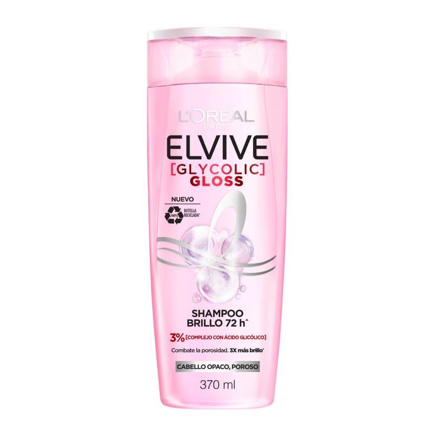
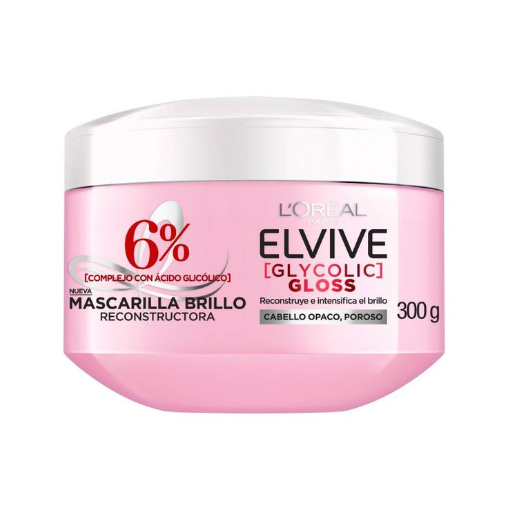
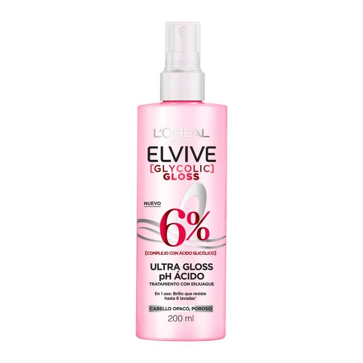
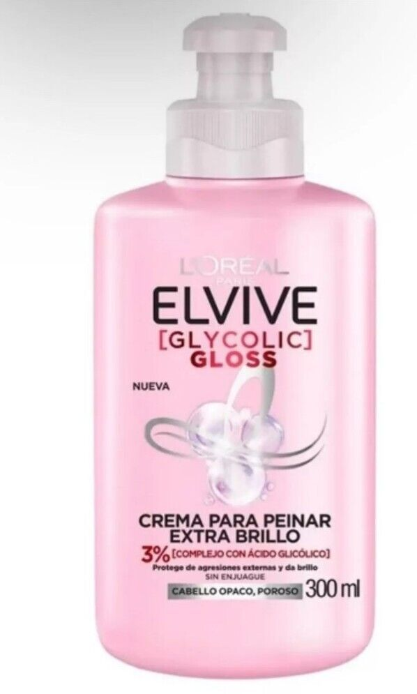
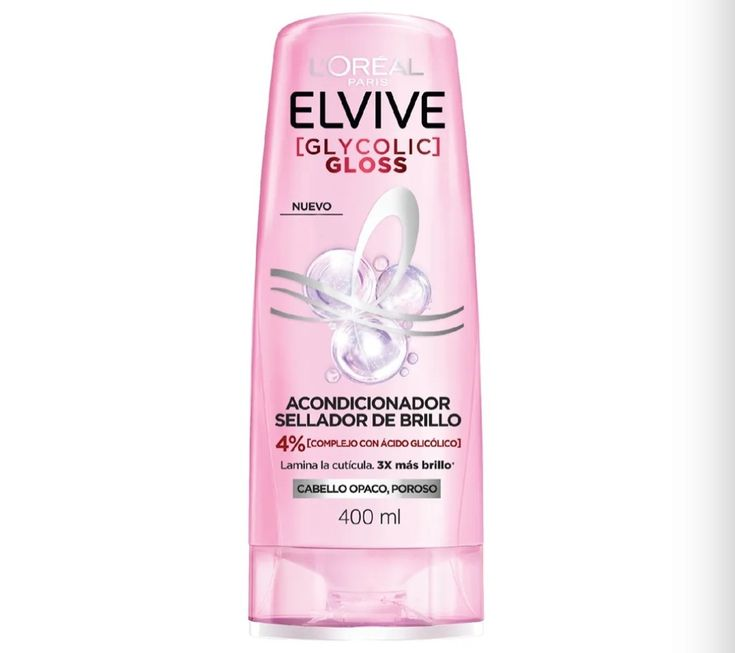

El shampoo Hydra Hyaluronic de L'Oréal está formulado para dar un brillo intenso y una suavidad increíble al cabelloeliminando impurezas y dejando una melena más brillante y suave.
Este shampoo es ideal para cabellos opacos o que necesitan un impulso de luminosidad
Perfecto para quienes buscan un cabello con un brillo espectacular y un toque de frescura
$1500
Mascarilla Elive Hydra Hyaluronic
La Mascarilla Hydra Hyaluronic de L'Oréal está formulado para dar un brillo intenso y una suavidad increíble al cabelloeliminando impurezas y dejando una melena más brillante y suave.
Este shampoo es ideal para cabellos opacos o que necesitan un impulso de luminosidad
Perfecto para quienes buscan un cabello con un brillo espectacular y un toque de frescura
$750
Acid Serum Elive Hydra Hyaluronic
El Hydra Hyaluronic Acid Serum de L'Oréal está formulado para dar un brillo intenso y una suavidad increíble al cabelloeliminando impurezas y dejando una melena más brillante y suave.
Este shampoo es ideal para cabellos opacos o que necesitan un impulso de luminosidad
Perfecto para quienes buscan un cabello con un brillo espectacular y un toque de frescura
$1000
Crema de Peinar Elive Hydra Hyaluronic
La crema de peinarHydra Hyaluronic de L'Oréal está formulado para dar un brillo intenso y una suavidad increíble al cabelloeliminando impurezas y dejando una melena más brillante y suave.
Este shampoo es ideal para cabellos opacos o que necesitan un impulso de luminosidad
Perfecto para quienes buscan un cabello con un brillo espectacular y un toque de frescura
$500
AAcondicionador Elive Hydra Hyaluronic
El Acondicionador Hydra Hyaluronic de L'Oréal está formulado para dar un brillo intenso y una suavidad increíble al cabelloeliminando impurezas y dejando una melena más brillante y suave.
Este shampoo es ideal para cabellos opacos o que necesitan un impulso de luminosidad
Perfecto para quienes buscan un cabello con un brillo espectacular y un toque de frescura
$1500

Shampoo Elive Glycolic Gloss de L'Oréal
El shampoo Elvive Glycolic Gloss de L'Oréal está formulado para dar un brillo intenso y una suavidad increíble al cabelloeliminando impurezas y dejando una melena más brillante y suave.
Este shampoo es ideal para cabellos opacos o que necesitan un impulso de luminosidad
Perfecto para quienes buscan un cabello con un brillo espectacular y un toque de frescura
$1500

Mascarilla Elive Glycolic Gloss de L'Oréal
La mascarilla Elvive Glycolic Gloss de L'Oréal es un tratamiento intensivo diseñado para transformar el cabello opaco en una melena radiante y llena de vida.
Además, proporciona una nutrición intensa, dejando el cabello más suave, manejable y revitalizado.
$750

Ultra Gloss Glycolic de L'Oréal
El Ultra Gloss de Elvive es un tratamiento intensivo pensado para maximizar el brillo y la suavidad del cabello.
Este producto es ideal para quienes buscan un acabado impecable, especialmente después del peinado.
$1000

crema para peinar Elvive Glycolic Gloss de L'Oréal
La crema para peinar Elvive Glycolic Gloss de L'Oréal Paris está diseñada para combatir la porosidad del cabello y potenciar su brillo natural.
Enriquecida con ácido glicólico, su fórmula rellena los defectos de la fibra capilar y sella la cutícula, facilitando el peinado y dejando el cabello más suave y
$500

Acondicionador Elive Glycolic Gloss de L'Oréal
El acondicionador Elvive Glycolic Gloss de L'Oréal está diseñado para complementar el shampoo de la misma línea, proporcionando un brillo intenso y una suavidad extrema al cabello
Es ideal para cabellos opacos o dañados que necesitan una dosis extra de luminosidad y suavidad. Con este acondicionador, tu melena estará más brillante, sedosa y fácil de peinar.